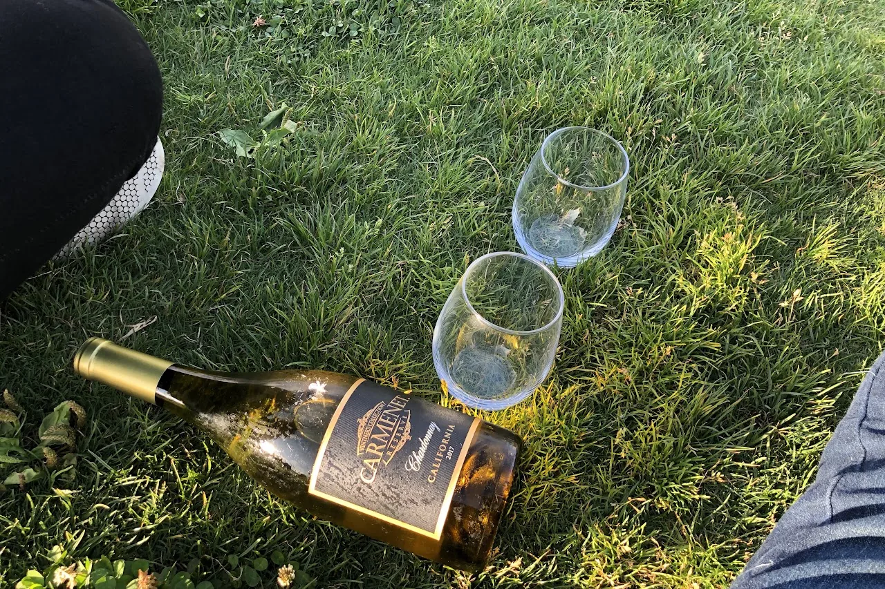

Live → Blog
September 21, 2019

First of all, my official relationship status is single and I am not available. Although if I were to cross paths with someone and we kicked it off, I would not be entirely opposed to trying something. Perhaps because of my Engineering training, I have come to believe in data driven decision making. I have combed through my relationships between 2004 and 2019, my crushes between 2001 and 2019, and everything in between to try and understand my romantic relationships and interactions. Some useful questions to guide this brief reflection include: What kind of person am I naturally attracted to? What are the deal breakers for me? What are my opportunities for growth in this area?
I have dated a diverse mix of women: introverts and extroverts, aspiring engineers and "slay queens", and a number of other differences. I have been attracted to women for different reasons. For some it was their unearthly beauty, for others it was for their unparalleled wit, and a select few it was their unshakeable confidence. As I have come to realize, often with the beautiful and the witty, I tend to focus more on how we would look as a couple to some external observers. Not that there is anything wrong with that, but some of my miserable relationships, including the most recent ones, were characterized by this. With the witty and the confident, my focus is often on how I feel around and with them. Women who have fallen in this category for me, were often women I would not credibly describe as pretty. But their confidence was enough to persuade me to believe they are beautiful. Even now in hindsight, I would still describe them as not pretty, but beautiful nonetheless. A constant internal battle I have to win when it comes to matters of romance, is to prioritize my joy over my ego. My ego often leads me to the pretty and witty categories, because it feels as though a man as handsome as I am should be with a drop-dead-gorgeous woman and a smarty pants like me should be with a genius. But my joy knows that I would be most fulfilled in a relationship with someone who is grounded in who they are, with whom I can engage in intellectually stimulating experiences, and with whom I can be comfortable to grow in their presence.
Now on to the deal breakers. The biggest one is someone without an opinion on things, or without the confidence to defend their position. Some of the most unfulfilling relationships were where the women always deferred to my judgment on everything. From what we did with our spare time, to where our relationship went. In the beginning, as a man from a patriarchal society, my ego felt good that I was the "leader" of the "family". But after a few weeks it gets old because I have a finite number of interests. So pretty soon it becomes as though I am dating myself. I have always thrived in relationships where my partner was willing to bring ideas to the table, and challenge the ideas I brought if they were not interesting enough to her. Of course it was a bit uncomfortable to hear that my brilliant idea to go on a hike to collect mmupudu (some wild berry from home) was not all that great, but it afforded me the opportunity to learn about her and for us to practice our negotiation skills. If I wanted to date myself, I would not seek a relationship in the first place. The second deal breaker for me is distance. Here I am talking about both geographic distance and emotional distance. I have enough data points, to know that long distance relationships do not work for me. In particular, long distance at the beginning of a relationship, where there is ambiguity over the expected duration of that distance, and where there are no plans in place to bridge the distance in the interim, all do not work for me. The final deal breaker is with regards to my friends. Except for 5, all my close friends are women. This has been a source of contention in some of the data points, although rarely with my partners who were secure in their value proposition. I am willing to change things like my religious orientation, and my last name in the name of love, but my friends are to remain untouched. Of course, this is not to say a partner cannot express legitimate concern about specific interactions. But that it cannot be a concern that is not backed by specific evidence.
The reason why I list my relationship status as single and not available, is because I hold the belief that there is still a lot of growth I have to do in this area. From a number of the data points, it is clear there is still a lot of past pain I need to work through. I think over the years, I have become really good at taking punches on a roll because I was of the opinion that life must go on. Yes, life must go on. But if we want it to be a full life, we must find the time to pause every once in a while and recover from the punches. With the professional aspect of my life being the largest source of uncertainty right now, I think now is the best time to recover from the punches of my romantic misadventures. The second, and equally important, point for growth is my ego. My ego always leads me to the wrong relationships. I need to stop thinking about the question of my prospective partner from the lens of what those who matter to me would think of such a relationship. Neither my family nor my friends will have to live with such a person. So the only consideration should be if such a person amplifies the joy in my life. No person, no matter how pretty or accomplished, is worth diminishing my joy. My third area of growth, is to accept that I am who I am and not try to be anyone else. Specifically, I should make peace with the fact that I am an old soul. Trying to keep up in this "speed-dating" world will only leave me unfulfilled and miserable. I am confident in my value proposition. In fact by participating in this "speed-dating" world that is unnatural to me, I am devaluing my value proposition.
In conclusion, the evidence suggests that I am not fit to pursue a romantic relationship in the present phase in life. But it has also shed some insights into the general type of woman I should pursue when I eventually emerge from this phase. My friend describes my type of woman, as the queen bee type. To me a queen bee type of woman is one who is confident in themselves, someone who has their own hustle, who is proximal to me, and whose pheromones sing a song my receptors can hear. And if the queen bee is a fine aunty, all the better!
← Return to Blog